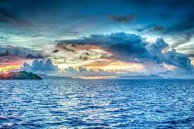
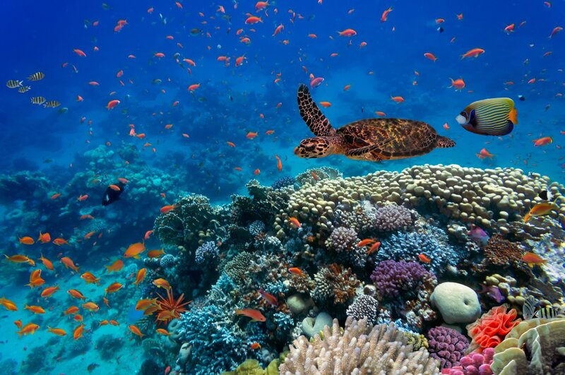
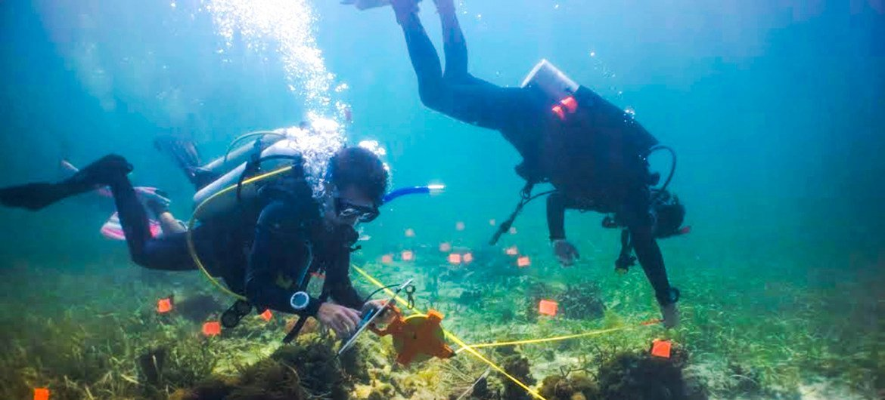

Bienvenidos al Mundo Marino
Los océanos son los pulmones del planeta, cubren más del 70% de la superficie terrestre y son el hogar de millones de especies. En esta página exploraremos dos de los más grandes: el Océano Pacífico y el Océano Atlántico.

Los océanos son los pulmones del planeta, cubren más del 70% de la superficie terrestre y son el hogar de millones de especies. En esta página exploraremos dos de los más grandes: el Océano Pacífico y el Océano Atlántico.
El Océano Pacífico es el más grande del planeta, cubriendo más de un tercio de la superficie terrestre. Se extiende desde Asia y Australia hasta América, y alberga la Fosa de las Marianas, el punto más profundo de la Tierra.
Su biodiversidad es impresionante: corales, peces tropicales, tiburones, ballenas y delfines lo habitan. Además, es crucial para el equilibrio climático global.
El Océano Atlántico conecta América con Europa y África. Es conocido por su importancia histórica en la navegación y el comercio, así como por su papel en las corrientes oceánicas que influyen en el clima mundial.
El Atlántico es el segundo océano más grande y alberga ecosistemas variados, desde el Mar Caribe hasta el Mar del Norte.

Los océanos son el hogar del 80% de todas las formas de vida del planeta. Contienen una enorme variedad de especies, desde diminutos plancton hasta majestuosas ballenas azules. Su preservación es esencial para mantener la vida en la Tierra.
El cambio climático, la contaminación y la pesca excesiva amenazan la salud de nuestros océanos. Debemos actuar con responsabilidad: reducir el uso de plásticos, promover la pesca sostenible y apoyar proyectos de conservación marina.
